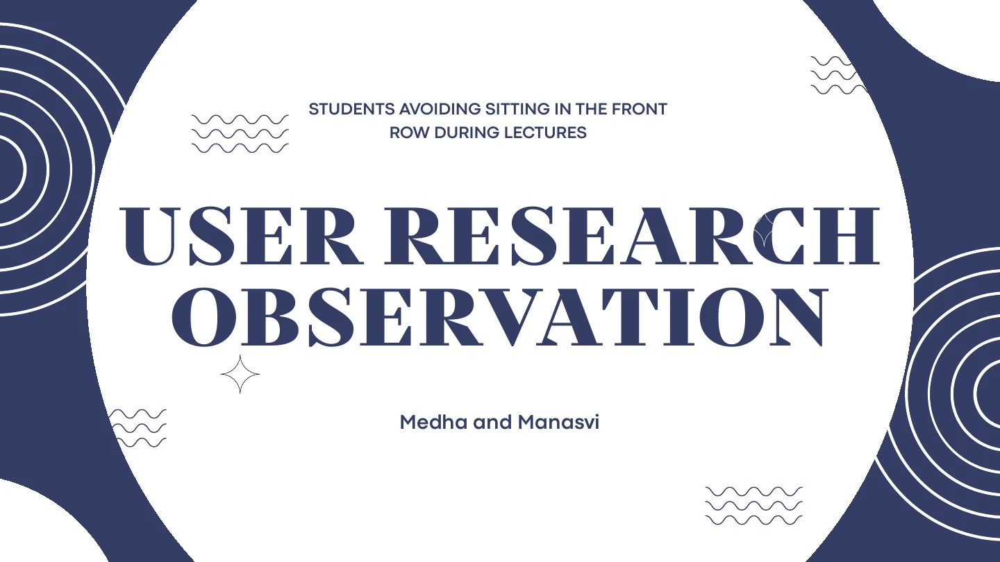
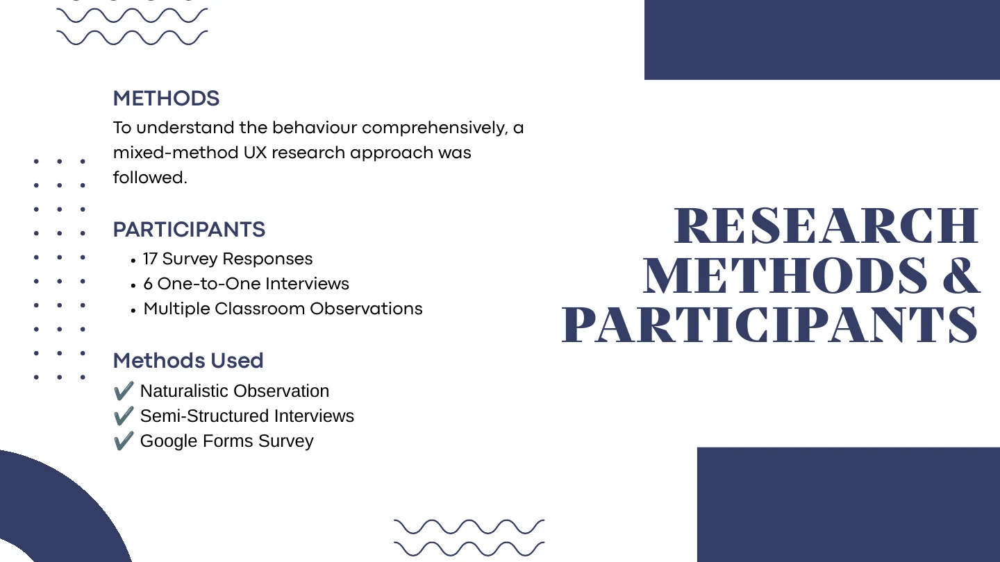
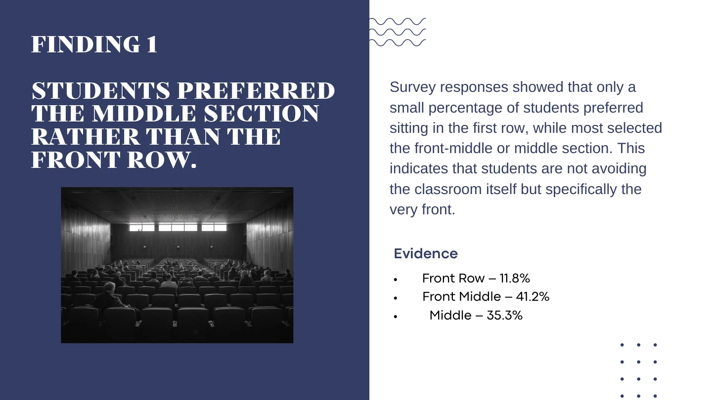

Naturalistic observation
We observed students entering classrooms and choosing seats without interrupting their normal behaviour.
A collaborative study exploring how peer groups, physical comfort, and classroom dynamics influence where university students choose to sit.

01 / The question
Students regularly walked past available front-row seats, but the reason was not obvious. We wanted to understand the behaviour without assuming that students were disengaged or careless.
Our objective was to identify the social, environmental, and psychological factors behind the choice—and to separate what we observed from what students said about their own preferences.
02 / Research approach
We observed students entering classrooms and choosing seats without interrupting their normal behaviour.
Six conversations helped us investigate the reasoning behind recurring seating patterns.
Seventeen responses gave us another view of preferred zones and the factors students noticed.

03 / Key findings
Only 11.8% selected the front row, compared with 41.2% for the front-middle and 35.3% for the middle.
Participants often chose seats around their peer group and were more open to the front when friends sat there too.
Ventilation, temperature, lighting, visibility, and classroom layout were repeatedly connected to seat preference.

04 / What I learned
This was a small university study, not a universal conclusion about every classroom. The sample was limited, and some evidence relied on self-reporting.
The strongest next step would be to map the physical classroom zones more precisely and test a focused intervention—such as group-friendly seating or improved front-row comfort—rather than assuming students need to be persuaded.
Collaborative research by Manasvi Wadhwa and Medha.